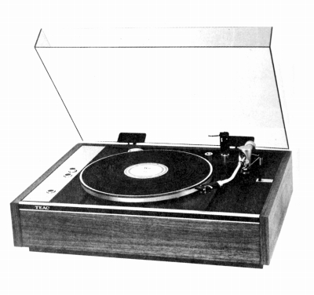
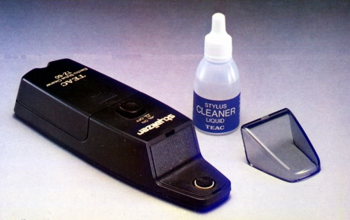
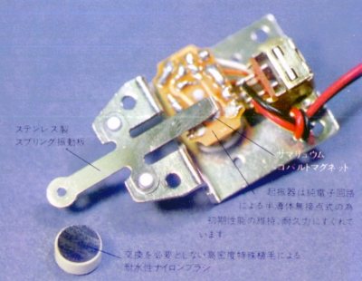
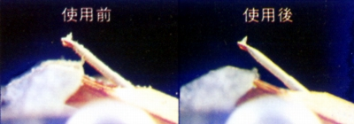
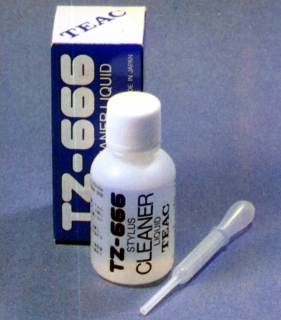
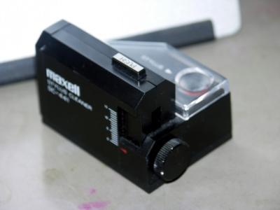
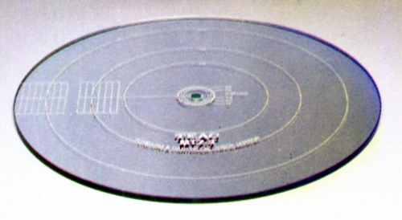
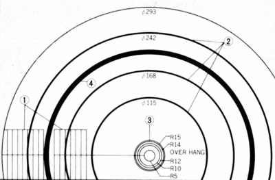
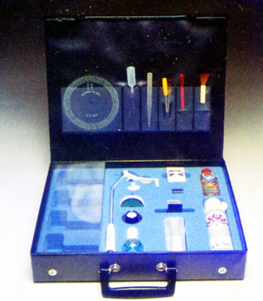

TEAC（ティアック）
1953年設立の東京テレビ音響株式会社と、その姉妹会社、東京電気音響株式会社が1964年に合併してできたオーディオメーカー。高級オーディオ用ブランドで「ESOTERIC （エソテリック）」、業務用機器のブランドで「TASCAM （タスカム）」を持っている。なお「TEAC（ティアック）」は会社名東京電気音響の英名の頭文字＝「Tokyo Electro Acoustic Company」からとったとされている。TEAC（ ティアック）については、テープデッキ、特にオープンリールデッキ、また近年では「ESOTERIC （エソテリック）」ブランドでの高級ＣＤプレイヤーのイメージが強いが、決してアナログディスク関連とは無縁ではなかった。ダイレクトドライブのターンテーブルが台頭する前は、業務用のターンテーブルで一定の評価を得ていたブランドだった。
しかし当サイトの主要な対象であるカートリッジやトーンアームなどについては、現時点では有効な資料が手元になく、数点のアクセサリーの資料があるのみである。しかし、アクセサリー類は、なかなか凝った内容のものだった。

（1973年頃の同社のプレイヤー、TS-15。ターンテーブルは自社製だが、アーム・カートリッジはFIDELITY-RESEARCH製を使用）
TZ-60


電動式のスタイラスクリーナー。
価格は3,800円。他社の類似商品を生んだ。
ブラシ式のクリーナに比べ、クリーニング効果が極めて高い。
またレコード演奏前の振動系のウォーミングアップにもなる。


別売りの交換クリーナー液TZ-666、600円。

管理人愛用のマクセル製の電動クリーナーSC-441。
MTZ-3

トーンアーム＆カートリッジ・チェックミラー、MTZ-3、3,000円。
�@カートリッジ・オフセット角、�Aオートプレイヤー針先自動降下
位置、�Bオーバーハング、�Cランブル(S/N）のチェックなどができる。

TZ-15

プレイヤーアクセサリーキッド、9,800円
各種クリーナー、水準器、針圧計、ルーペ
プラス・マイナスドライバー、ピンセットなど
の他に、カートリッジ・キーパまである。